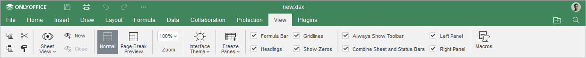
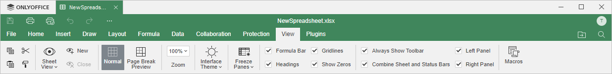

Kartica View
Kartica View u Spreadsheet Editor-u omogućava upravljanje unapred definisanim prikazima radnih listova na osnovu primenjenih filtera i opcija prikaza.
Odgovarajući prozor Online Spreadsheet Editor-a:

Odgovarajući prozor Desktop Spreadsheet Editor-a:

Opcije prikaza dostupne na ovoj kartici:
- Sheet View omogućava upravljanje unapred definisanim prikazima radnog lista.
- Normal omogućava prikaz cele tabele.
- Page Break Preview omogućava prikaz samo oblasti namenjene za štampu.
- Zoom omogućava uvećavanje i umanjivanje prikaza tabele.
- Interface Theme omogućava promenu teme interfejsa izborom jedne od opcija: Same as system, Light, Classic Light, Dark, Contrast Dark, Gray, Modern Light ili Modern Dark.
- Freeze Panes omogućava zamrzavanje i odmrzavanje određenih panela, redova i kolona.
Sledeće opcije vam omogućavaju da podesite elemente koji će biti prikazani ili sakriveni. Označite elemente koje želite da učinite vidljivim:
- Formula Bar za prikaz trake sa formulama iznad tabele.
- Headings za prikaz zaglavlja, odnosno zaglavlja kolona na vrhu i redova sa leve strane.
- Gridlines za prikaz mrežnih linija, odnosno ivica ćelija.
- Show Zeros za stalni prikaz vrednosti „0“ kada se unese u ćeliju.
- Always Show Toolbar za stalni prikaz gornje trake sa alatkama.
- Combine Sheet and Status Bars za prikaz svih alata za navigaciju po listovima i statusne trake u jednoj liniji. Kada ova opcija nije označena, statusna traka će biti prikazana u dve linije.
- Left Panel za prikaz levog panela.
- Right Panel za prikaz desnog panela.
Dugme Macros omogućava otvaranje prozora u kojem možete kreirati i pokretati sopstvene makroe. Da biste saznali više o makroima, pogledajte našu API dokumentaciju.